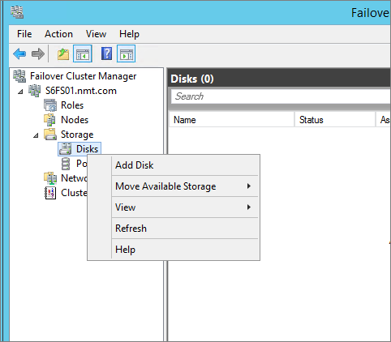
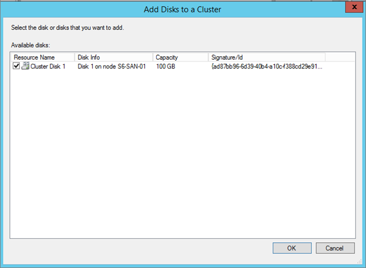
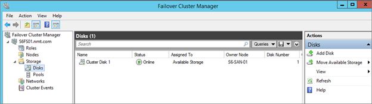
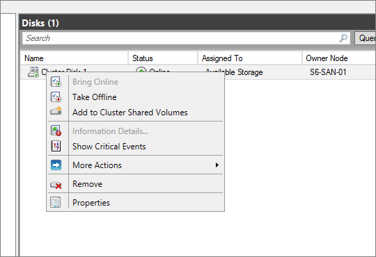

How to add a disk to a Cluster
In this post we will look at how we can add a disk resource to a cluster and also how to convert a disk in to a CSV (Cluster Shared Volume) storage.
first step is to have eligible storage available within the cluster. storage could be, any shared storage that you present to your cluster such as Serial Attached SCSI / Fiber Channel / iSCSI or even Shared VHDX. more information on Storage requirements please visit http://technet.microsoft.com/en-us/library/jj612869.aspx.
Step 01 – Open Failover Cluster Manager and expand storage. right click on Disks and select “Add Disk”"

Step 02 – after selecting “add disk” failover cluster manager provides with a list of eligible disks which can be added for this cluster. in this step we need to select disks that we need to add and assign in to a failover cluster

after selecting appropriate disk resource, we can now see recently added disk within Disks view on our Failover Cluster Manager

Step 03 (Option) – if its required to enable Cluster Shared Volumes, we can right click on this storage and select “Add to Cluster Shared Volumes” which will convert this disk in to a CSV volume. if it’s a CSV volume it’s recommended that the volume is first partitioned with NTFS.
